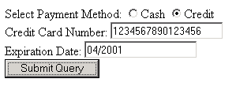
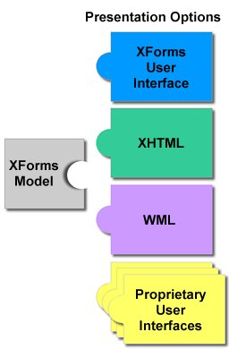

| Table of Contents | Prev | Next | Bottom |
|
Quick Table of Contents |
|---|
| 2 Concepts 2.1 Purpose and Presentation 2.2 Current Approach: XHTML 2.3 Stepping Up to XForms 2.4 Providing XML Instance Data 2.5 The XForms Model 2.6 Multiple Forms per Document 2.7 Additional User Interface Capabilities 2.8 Complete Document |
This informative chapter provides an easily approachable description of the design of XForms, describing the major components and how they relate. Not every feature of XForms is covered here. For a complete, normative description of XForms, refer to the remainder of this document.
For explanatory purposes, a form can be considered to consist of 'purpose', 'presentation', and 'data'. Some examples:
| Purpose | Presentation | Data |
| Data collection | Arrangement of form controls | Registration information |
| Time card | How dates are entered | Days and hours worked |
| Order form | How to render the form controls on small devices | Order, shipping, and payment info |
| Information Please | How the form integrates with a Web site | User contact information |
The design of existing Web forms didn't separate the purpose from the presentation of a form, and additionally offered only a restricted representation for data captured through the form. This is the primary difference between XForms and previous form technologies.
Take for instance a simple eCommerce form authored in XHTML 1.0:
<?xml version="1.0" encoding="UTF-8"?>
<!DOCTYPE html PUBLIC "-//W3C//DTD XHTML 1.1//EN"
"http://www.w3.org/TR/xhtml11/DTD/xhtml11.dtd">
<html xmlns="http://www.w3.org/1999/xhtml" xml:lang="en">
<body>
<form action="http://example.com/submit" method="post">
<span>Select Payment Method: </span>
<input type="radio" name="paytype" value="cash">Cash</input>
<input type="radio" name="paytype" value="credit">Credit</input><br/>
<label>Credit Card Number: <input type="text" name="cc"/></label><br/>
<label>Expiration Date: <input type="text" name="exp"/></label><br/>
<input type="submit"/>
</form>
</body>
</html> |
A browser might render this form as follows:
This form makes no effort to separate purpose (data collection semantics) from presentation (the <input> form controls), and offers no
control over the basic name/value formatting of the resulting data. XForms greatly
improves the expressive capabilities of electronic forms.
XForms are comprised of separate sections that describe what the form does, and how the form is to be presented. This allows for flexible presentation options, making it possible for classic XHTML form controls, as well as other form control sets such as WML to be leveraged, as shown here.
The simplest case involves authoring only the new XForms
form controls, leaving out the other sections of the form. To convert the previous form into
XForms this way, an xform element is needed in the head section of
the document:
<xform:xform> <xform:submitInfo target="http://example.com/submit" method="..."/> </xform:xform> |
With these changes to the containing document, the previous example could be rewritten like this:
<selectOne xmlns="http://www.w3.org/2001/06/xforms" ref="paytype">
<caption>Select Payment Method</caption>
<choices>
<item value="cash">Cash</item>
<item value="credit">Credit</item>
</choices>
</selectOne>
<textbox xmlns="http://www.w3.org/2001/06/xforms" ref="cc">
<caption>Credit Card Number</caption>
</textbox>
<textbox xmlns="http://www.w3.org/2001/06/xforms" ref="exp">
<caption>Expiration Date</caption>
</textbox>
<submit xmlns="http://www.w3.org/2001/06/xforms"/> |
Notice the following features of this design:
The user interface is not hard-coded to use radio buttons. Different devices (such as a voice browser) can render the concept of "selectOne" as appropriate.
Form controls always have captions directly associated with them, as child elements.
There is no need for an enclosing form element.
Element names for form controls have been changed: textbox is a specific
element, rather than a type attribute on input, as in XHTML.
Data entered through the form controls ends up submitted as XML.
With these changes, the XForms Processor will be able to directly submit XML instance data. The XML is constructed by creating a root element with child elements reflecting the names given to each form control. For instance, the submitted data might look like this:
<!-- envelope, generated separately --> <Envelope> <Body> |
<!-- serialized instance data -->
<paytype>Credit</paytype>
<cc>12354677890123456</cc>
<exp>04-2001</exp> |
<!-- envelope, generated separately --> </Body> </Envelope> |
Understandably, authors will often desire greater control over exact construction of the submitted instance data. One common case might be submitting to a server XML data that is validated against a predefined DTD or XML Schema.
XForms keeps track of the state of the partially filled form through
instance data, which provides an outline
of the desired XML data, including namespace information. The instance data starts
off with the initial values for the form, is updated as the user fills the form, and
eventually is serialized and submitted. The initial instance data is taken from the
instance element inside the xform element, defined as follows:
<xform:xform>
<xform:submitInfo target="http://example.com/submit" method="..."/>
<xform:instance>
<payment type="credit" xmlns="http://commerce.example.com/payment">
<cc/>
<exp/>
</payment>
</xform:instance>
</xform:xform> |
This design has features worth calling out:
There is complete flexibility in the structure of the XML. Notice that the item
paytype is now expressed as an attribute type of the element
payment.
Empty elements cc and exp serve as placeholders in the XML structure,
and will be filled in with form data provided by the user.
An initial value ("credit") for the form control is provided through the
type attribute in the instance data. In the submitted XML, this initial value will
be replaced by the user input, if any.
The instance data provides a unique namespace, which will be used when the XML gets submitted.
To connect this instance data with form controls, the
ref attributes on the form controls need to point to the proper part of the instance
data, using binding expressions:
<selectOne ref="payment/@type"> ... <inputText ref="payment/cc"> ... <inputText ref="payment/exp"> |
Binding expressions are based on XPath [XPath 1.0], including the use of the '@' character to refer to attributes, as seen here.
The earlier XHTML form in 2.2 Current Approach: XHTML. Even in this short form, there are several aspects that would be desirable to express, but would only be possible through the addition of unstructured script code:
The credit card information fields cc and exp are
only relevant if the "Credit" option is chosen in the paytype field.
The credit card information fields cc and exp should be
required when the "Credit" option is chosen in the paytype field.
The field cc should accept digits only, and should have exactly 14,
15, or 16 digits.
The field exp should accept only valid month/date combinations.
By specifying a 3rd component, the XForms Model, authors can include rich declarative datatype and validation information in forms.
| Editorial note: MJD | |
| The examples here are sketchy out of necessity; this section will need to be rewritten after the Schema Basic task force delivers its syntax recommendations. | |
An XForms Model consists of model items, which include XML Schema datatype information [XML Schema part 2] as well as properties specific to XForms.
<!-- add to the cc model item the following: -->
relevant="value('payment/@type') == 'credit'"
required="true"
datatype of "xform:string"
facet pattern of "\d{14,16}"
<!-- add to the exp model item the following: -->
relevant="value('payment/@type') == 'credit'"
required="true"
datatype of "xform:gYearMonth" |
XForms places no limits on the number of individual forms that can be placed in a single
containing document. When multiple forms share
the same containing document, multiple
xform elements are needed. The first xform element may skip a unique id
attribute (as have all the examples above), but subsequent xform elements require
an id so that they can be referenced from elsewhere in the containing document.
The other side of the equation is that form controls throughout the document need to specify
which xform element is associated with the instance data to which they bind. This is
accomplished through an xform attribute alongside the ref attribute. The
default for the xform attribute is to refer to the first xform element in
document order.
To add a second form, an opinion poll, to our commerce example, the following would be authored in the head section of the XHTML:
<xform:xform>
<xform:submitInfo target="http://example.com/submit" method="..."/>
<xform:instance>
...payment instance data...
</xform:instance>
</xform:xform>
<xform:xform id="poll">
<xform:submitInfo target="http://example.com/poll" method="..."/>
</xform:xform> |
Additionally, the following form control markup in the body:
<selectOne ref="pollOption" xform="poll" xmlns="http://www.w3.org/2001/06/xforms">
<caption>How useful is this page to you?</caption>
<choices>
<item value="0">Not at all helpful</item>
<item value="1">Barely helpful</item>
<item value="2">Somewhat helpful</item>
<item value="3">Very helpful</item>
</choices>
</selectOne>
<submit xform="poll" xmlns="http://www.w3.org/2001/06/xforms"/> |
The main difference to note here is the use of xform="poll",
which identifies which form the form control binds to.
The visual layout appearance of the initial XHTML forms such as the above example (2.2 Current Approach: XHTML) leaves much to be desired.
Need extended UI example here |
This chapter presented various bits and pieces of XForms as a tool to help readers understand the design. Presented here is the entire XHTML+XForms document presented in one segment.
<?xml version="1.0" encoding="UTF-8"?>
<!DOCTYPE html PUBLIC "-//W3C//DTD XHTML 1.1//EN"
"http://www.w3.org/TR/xhtml11/DTD/xhtml11.dtd">
<html xmlns="http://www.w3.org/1999/xhtml"
xmlns:xform="http://www.w3.org/2001/06/xforms"
xml:lang="en">
<head>
<title>XForms in XHTML</title>
<xform:xform>
<xform:submitInfo target="http://example.com/submit" method="..."/>
<xform:instance>
<payment type="credit" xmlns="http://commerce.wizard">
<cc/>
<exp/>
</payment>
</xform:instance>
</xform:xform>
<xform:xform id="poll">
<xform:submitInfo target="http://example.com/poll" method="..."/>
</xform:xform>
</head>
<body>
... include advanced UI markup here ...
</body>
</html> |
| Table of Contents | Top |